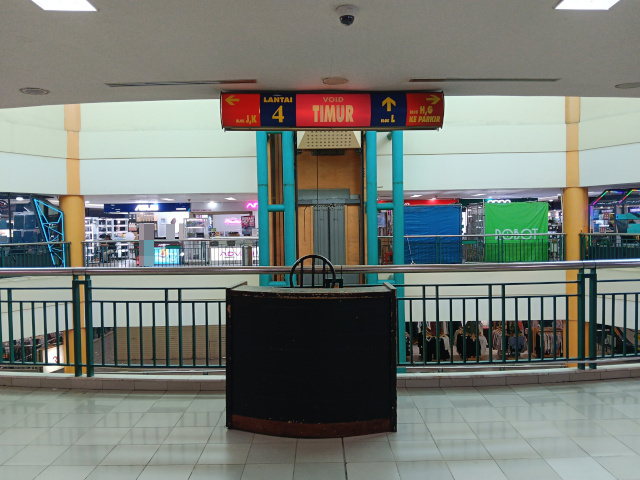
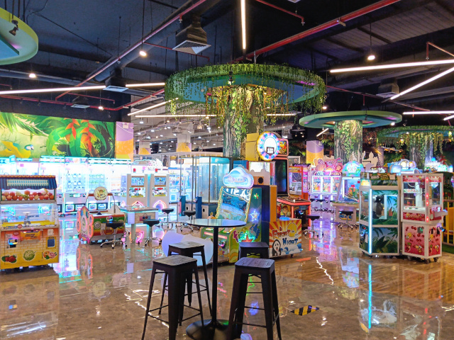

Dulu, aku sering pergi ke mal. Namun, aku sering menyebalkan ketika diajak ke mal--sering sekali keluar permintaan pulang ke rumah. Anehnya, aku yang sekarang justru ingin sekali diajak pergi ke mal. Entah kenapa, suasana di mal itu aku rasa telah menjadi salah satu kenangan yang tak bisa kulupakan.
Hari ini (13 September 2025), aku pergi ke ITC Cempaka Mas bersama ibuku, adikku, dan kakakku untuk memperbaiki laptop kakakku yang rusak. Karena aku sekarang sudah jarang pergi ke mal, dan mudah lupa dengan masa laluku, saat kami berada di dalam gedung, aku bertanya kepada ibuku bagaimana kondisi mal sekarang, terutama mengenai jumlah pengunjungnya. Ia menjawab bahwa jumlah pengunjung mal kini jauh lebih sedikit dibandingkan dengan masa sebelum pandemi. Dugaanku mengenai penurunan jumlah pengunjung mal adalah karena perkembangan teknologi yang memungkinkan orang-orang berbelanja online melalui layanan E-commerce, dan pandemi COVID-19 yang banyak mendorong orang-orang dalam menggunakan layanan E-commerce. Ia juga menambahkan bahwa dulu terdapat banyak orang yang menjual barang di tepi jalan mal, tetapi sekarang sudah jarang kami lihat.
Aku sebenarnya penasaran dengan kondisi Hapimart (hypermarket di ITC), tetapi kita tidak memiliki tujuan disana.
Sekarang, aku ingin memperkenalkan bagaimana kondisi Funworld (pusat permainan arkade) di ITC. Sebenarnya, aku tidak mudah mengingat tentang masa laluku, jadi aku tidak dapat memastikan kalau aku pernah bermain di sini atau apa yang ingin kukatakan benar. Tempat ini sepi. Kita bisa bermain permainan tanpa menunggu orang lain menyelesaikan sesi permainannya. Namun, seiring berjalannya waktu, orang-orang yang ingin berkunjung mulai datang, tetapi menurut observasi dan opiniku, belum cukup untuk membuat tempat ini tidak sepi. Sepertinya orang-orang sekarang lebih memilih video game--yah, tidak bisa menyalahkan mereka sih--karena aku juga lebih suka bermain video game.
Hari ini, aku bertanya kepada ibuku, apakah mal akan tetap ada di masa depan? Kalau kata ibuku, ya. Jadi aku rasa aku bisa tenang mengetahui bahwa tempat yang membuat kenangan-kenanganku takkan hilang.
Kalau kalian masih bisa traveling, sebaiknya dinikmatkan. Walaupun hanya bisa keluar rumah, ke pasar, ke sekolah, dan sebagainya, sebaiknya berterima kasih dan manfaatkan waktumu dengan hal-hal yang baik. Karena mungkin suatu saat nanti, kamu tidak akan dapat menikmati hal seperti itu lagi.
Terima kasih banyak untukmu yang sudah membaca, dan terima kasih banyak juga untuk mal-mal yang telah menjadi bagian dari ceritaku.